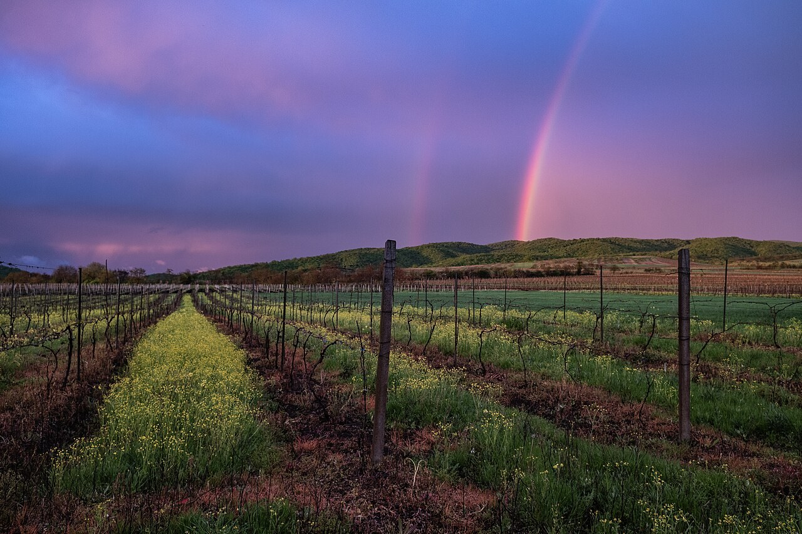
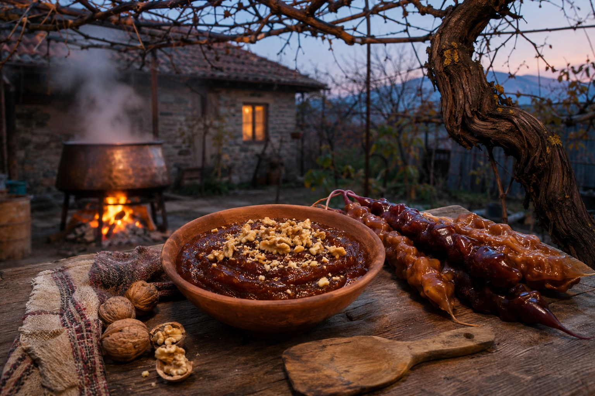

Бадаги

Берите лопатку. Деревянную, железной нельзя, железо сок портит, он темнеет и пахнет гвоздём. Мешайте по дну, медленно, без остановки, как будто вы в чём-то виноваты. Остановитесь — пригорит, и тогда весь котёл будет пахнуть, как обида. Пенку я сам сниму, у меня шумовка, а вы мешайте.
Это ркацители. Белый виноград, кахетинский, у нас его больше всего. Для вина хорош, для бадаги — лучше всех: сладкий. Сок выжали утром, сейчас он будет кипеть часа три, пока не уйдёт почти наполовину. Потом из него сделаем татару. По-имеретински это пеламуши, только они кладут кукурузную муку, а мы пшеничную, тёмную. Они говорят, что у нас грубо, мы говорим, что у них жидко. Так и живём, одна страна.
Мне скоро восемьдесят. Виноград я помню раньше, чем себя. Отец работал в совхозе бригадиром, я в шесть лет таскал корзины, в двадцать стал трактористом, тоже в совхозе. Всё вино тогда уходило на север. Поезд с цистернами шёл из Гурджаани, мы стояли у переезда и считали вагоны. Сорок вагонов — хороший год. Отец говорил: вся Россия пьёт наше вино и думает, что это она так хорошо живёт.
Потом совхоз раздали. Мне досталось два гектара, вон там, за дорогой, до той ореховой посадки. Вино мы сами не делали на продажу, только для себя, в квеври, как все. Виноград сдавали на завод. Завод платил мало, но платил. А завод продавал в Россию. Так было пятнадцать лет, и никто не думал, что можно по-другому. Зачем думать, если цистерны едут?
Двадцать седьмого марта две тысячи шестого года по телевизору сказали, что наше вино опасно для здоровья. Я помню, потому что в тот день у внука был день рождения, ему исполнилось пять. Сидим за столом, и тут — опасно. Мой тесть выпивал по литру в день и прожил за девяносто. Если оно и травит, то очень не торопится.
Сначала смеялись. Потом перестали. Потом запретили «Боржоми». Тут уже никто не смеялся: если воду нельзя, значит, дело не в вине.
Я вам скажу честно, я не люблю, когда врут про наших. Но и сам врать не буду. В Москве тогда продавали «Киндзмараули» больше, чем его можно сделать на всей земле, которая под Кварели. Где они его брали, я не знаю. Знаю, что не у меня. Наливали в бутылки что попало, клеили наши названия и продавали. И это тоже были люди с нашими фамилиями, не только ихние. Так что, если хотите знать, мы виноваты в одном: настоящего было мало, а желающих много.
Мешайте, мешайте. Видите, пена пошла серая — это я сниму. Когда станет белая, значит, чистый.
В апреле приехал президент. Не к нам в село, в район, собрал людей. Сказал: не рубите лозу, мы найдём новые рынки, Европа, Америка, Китай. Люди слушали. Я тоже слушал. Китай — это хорошо, только мой ркацители не знает дорогу в Китай, он знает дорогу до переезда.
Весной и летом всё было как обычно. Лоза не знает, что её вино запретили. Она цветёт, завязывается, наливается. Это самое тяжёлое было — смотреть, как она старается. Ей не объяснишь.
А в сентябре — ртвели, сбор. И тут выяснилось, что винограда у всех много, а брать некому. Заводы говорят: у нас прошлогоднее вино стоит, разлитое, никуда не уехало, куда нам ещё? Кто брал, брал по такой цене, что дешевле было оставить на лозе. Многие и оставили. Ехали по дороге — висит. Октябрь — висит. Саперави висел до снега, чёрный, как будто в трауре. Птицы радовались. Только птицы.
Обещали построить завод в Гурджаани, чтобы сок делать. Потом построили, приезжали, резали ленточку, сказали, что почти весь виноград в Кахети продан. Может, и продан. Наш — мы съели.
И вот в этот самый октябрь вернулся мой сын.
Зураб работал в Москве на стройке седьмой год. Плиточник. Хороший, руки золотые, потолки, ванные. Деньги присылал каждый месяц, мы на них крышу перекрыли и внуку куртку купили. Документы у него были, я сам видел, с печатями. А осенью там поругались — наши поймали ихних офицеров, они рассердились, — и стали ловить грузин. По улицам, по стройкам, в общежитиях. Не разбирали, какие бумаги. Грузин — значит, вон.
Шестого октября он позвонил. Сказал: папа, нас везут в аэропорт, не волнуйся. Я не понял, почему не волноваться, если в аэропорт — это же хорошо, домой летит. Потом по телевизору показали, как их выводили из самолёта в Тбилиси. Самолёт был грузовой. Без окон. Президент назвал его вагоном для скота. Я стоял у телевизора и искал сына среди людей, которые выходят из этого брюха. Нашёл. Он был в одной рубашке, в октябре. Куртку не успел взять.
Я поехал за ним в Тбилиси на соседской машине. Он вышел ко мне, и мы не знали, что сказать. Ему было стыдно, что он приехал без денег и без вещей, как будто его выгнали за что-то. Мне было стыдно, что я ему ничего не могу дать: виноград висит, денег нет, работы нет. Мы ехали домой два часа и молчали. У Сагареджо он сказал: «Папа, а виноград сдали?» Я сказал: «Нет». Он сказал: «Ну и хорошо. Значит, есть что делать».
Пенку снимаю. Мешайте. Уже меньше пенки, видите?
Вот тогда мы и стали варить бадаги. Весь виноград, что висел, — собрали. Своими руками, без всякого завода. Выжали. Жена поставила этот котёл — он ещё её матери. Варили три недели, каждый день, с утра до ночи. Сын мешал. Я снимал пену. Жена делала татару и чурчхелу. Орехов было много, год был ореховый. Внуку было пять, он ходил весь липкий от сока, и осы летали за ним, как за гроздью.
Чурчхелу мы развесили на балконе, на веранде, в сарае, на верёвках, где бельё. Вся улица смотрела. Потом вся улица тоже стала варить. Бадаги пахло на всё село — сладко, тяжело, как в церкви на Пасху. Сосед смеялся: «Москва нам запретила вино, так мы будем есть его ложкой».
Чурчхелу мы потом продавали у дороги, туристам, тбилисцам, всем, кто ехал в Сигнахи. Часть отвезли родне в город. Часть съели за зиму. Денег вышло мало, но вышло. Главное — за ту осень мы с сыном наговорились, как за всю жизнь не говорили. Когда два мужика мешают один котёл, хочешь не хочешь — разговариваешь. Он мне рассказал про Москву то, чего по телефону не рассказывал. Я ему — про его мать, когда она была молодая, — чего тоже не рассказывал, не было повода.
Назад он не поехал. Остался у лозы. Сначала со мной, потом без меня, я теперь только смотрю и ругаюсь. Плитку он кладёт до сих пор, по соседям, — у половины села в ванной его плитка, и все довольны.
В тринадцатом году Россия опять открылась. Пришли люди с завода, сказали: теперь опять будем брать, как раньше. Сын сказал: спасибо, мы подумаем. Он теперь хитрый. Он теперь по-другому думает, Москва его научила.
А в том же году наш квеври записали в ЮНЕСКО — как наследие человечества. Тот самый горшок, в котором мой дед делал вино, а я думал, что это дедовское, отсталое, что завод лучше. Внук прочитал про это в телефоне и сказал: «Дед, так мы, оказывается, наследие». Я сказал: «Я всегда знал, что я наследие, только мне за это никто не платил».
Пока внук — его Ника зовут — учился в Тбилиси, он пил не наше, а импортное, итальянское. Потом поехал в Германию на какие-то курсы, вернулся и говорит: «Дед, они там за наше вино из квеври платят как за золото. Называют натуральным, оранжевым, по-всякому». Я говорю: «Это просто вино, как его делали всегда». Он говорит: «Вот за это и платят».
Теперь он делает вино в квеври, в нашем марани, в тех же кувшинах. Ркацители с кожицей, полгода в земле, жёлтое, как чай. Наклейки печатает сам. Продаёт в Германию, в Японию, в Данию. Японцы приезжали сюда, сидели вот на этой скамейке, кланялись моим квеври. Я им тоже поклонился, мне не трудно.
Внук спрашивает меня, как было «по-старому». Записывает в телефон, как вы. Я ему говорю: «Тогда мы делали вино для Москвы, а теперь ты делаешь для Токио. Когда вы начнёте делать для себя?» Он смеётся. Он говорит: «Дед, для себя ты делаешь, а я торгую». Может, он прав. Только я помню, что бывает, когда весь твой виноград едет в одну сторону.
Вы не обижайтесь, что я так про Москву. Я не про вас. Вы, я вижу, тоже оттуда уехали, иначе бы здесь не мешали. Мы с вами теперь в одном котле, хочешь не хочешь.
Смотрите. Стало вдвое меньше. Цвет — как старый мёд. Капните на тарелку — видите, не растекается, стоит каплей. Значит, готово. Огонь убираем.
Теперь татара. Немного бадаги отлить в кастрюлю, пусть остынет. В него муку, вот эту, тёмную, и размешать, чтобы ни одного комка. Потом в горячий бадаги, тонкой струйкой, и снова мешать. Опять вы, у меня рука уже не та. Минут двадцать, пока не станет густое, как кисель, и не начнёт отставать от стенок.
Разливаем в миски. Сверху орехи. Пусть стынет.
Внук сегодня в Тбилиси, отвозит ящики. Сын на винограднике, обрезает. Жена в доме, у неё давление, ей к котлу нельзя, она отсюда командует по телефону. Слышите, звонит? Это она спрашивает, не пригорело ли.
Нет, не пригорело. Вы хорошо мешали.
Пробуйте. Нет, подождите, пусть чуть остынет, а то обожжётесь — вас тут все обжигают, я слышал.
Ну? Это вкус две тысячи шестого года. Сладкий. А знаете почему? Потому что всё горькое уварилось. Три недели варили, вот оно и ушло. С сыном, с внуком, с осами. Что осталось — то и сладкое.

Татара — кахетинский пудинг из бадаги
На шесть порций
Что нужно
Для бадаги (уваренного виноградного сока):
- белый сладкий виноград (лучше ркацители) — 6 кг, это около 3,5 л сока.
Для татары:
- бадаги — 1 л;
- пшеничная мука (лучше обойная или второго сорта) — 150–180 г;
- грецкие орехи, очищенные — 100 г;
- молотая корица — щепотка, по желанию.
Как делать
1. Виноград вымойте, оборвите с гребней и раздавите руками или толкушкой. Отожмите сок через дуршлаг, а потом через марлю, чтобы остались только кожица и косточки.
2. Перелейте сок в широкую кастрюлю с толстым дном (лучше не алюминиевую) и доведите до кипения на среднем огне. Убавьте огонь и уваривайте 2,5–3 часа, помешивая деревянной лопаткой и снимая пену. Сначала пена серая, к концу — белая и редкая.
3. Бадаги готов, когда его объём уменьшился почти вдвое, а цвет стал тёмно-янтарным. Проба: капля на холодной тарелке не растекается. Если бадаги кажется мутным, оставьте его на ночь отстояться и аккуратно слейте с осадка.
4. Для татары отлейте 250 мл бадаги и остудите. Вмешайте в него муку до совершенно гладкой массы без комков.
5. Оставшиеся 750 мл бадаги доведите до кипения. Тонкой струйкой, постоянно помешивая, влейте мучную смесь.
6. Варите на слабом огне, не переставая мешать, 15–20 минут, пока масса не загустеет, как плотный кисель, и не начнёт отставать от стенок. Если нравится, добавьте щепотку корицы.
7. Разлейте татару по мискам или в смоченную водой форму. Сверху посыпьте рублеными орехами. Дайте остыть при комнатной температуре 2–3 часа, пока не схватится.
8. Подавайте прохладной. Если остался бадаги, нанижите целые орехи на нитку, окуните в горячую татару несколько раз, давая подсохнуть между окунаниями, и повесьте сушиться — получится чурчхела.
Бадаги не любит спешки: всё, что в нём было лишнего, уходит с паром.
Тбилиси, ноябрь 2026